Si tenemos dos cantidades que están cambiando juntas, ¿cómo podemos conectar las cantidades y entender cómo el cambio en una afecta a la otra?
Cuando la cantidad de agua en un tanque está cambiando, ¿qué comportamientos podemos observar?
La matemática es el arte de dar sentido a los patrones. Una forma en que surgen los patrones es cuando dos cantidades cambian simultáneamente. En este contexto, podemos entender la situación expresando la relación entre las cantidades cambiantes a través de palabras, imágenes, datos o a través de una fórmula.
Preview Activity1.1.1.
Supongamos que un acuario rectangular se está llenando con agua. El tanque mide \(4\) metros de largo por \(2\) metros de ancho por \(3\) metros de alto, y la manguera que está llenando el tanque está entregando agua a una velocidad de \(0.5\) metros cúbicos por minuto.
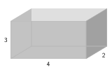Figure1.1.1.El acuario vacío
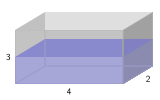Figure1.1.2.El acuario, parcialmente lleno.
¿Qué cantidades diferentes están cambiando en este escenario?
Después de \(1\) minuto, ¿cuánta agua hay en el tanque? En este momento, ¿qué profundidad tiene el agua?
¿Cuánta agua hay en el tanque y qué profundidad tiene el agua después de \(2\) minutos? ¿Después de \(3\) minutos?
¿Cuánto tiempo tomará para que el tanque esté completamente lleno? ¿Por qué?
Subsection1.1.1Usando Gráficos para Representar Relaciones
En Preview Activity 1.1.1, vimos cómo varias cantidades cambiantes estaban relacionadas en el contexto de un acuario llenándose con agua: el tiempo, la profundidad del agua y la cantidad total de agua en el tanque están cambiando, y cualquier par de estas cantidades cambia de manera relacionada. Una forma de entender la situación es registrar algunos datos en una tabla. Por ejemplo, observando que el tanque se llena a un ritmo de \(0.5\) metros cúbicos por minuto, esto nos dice que después de \(1\) minuto habrá \(0.5\) metros cúbicos de agua en el tanque, y después de \(2\) minutos habrá \(1\) metro cúbico de agua en el tanque, y así sucesivamente. Si dejamos que \(t\) denote el tiempo en minutos y \(V\) la cantidad de agua en el tanque en el tiempo \(t\text{,}\) podemos representar la relación entre estas cantidades a través de la Tabla 1.1.3.
\(t\)
\(V\)
\(0\)
\(0.0\)
\(1\)
\(0.5\)
\(2\)
\(1.0\)
\(3\)
\(1.5\)
\(4\)
\(2.0\)
\(5\)
\(2.5\)
Table1.1.3.Datos sobre cómo cambia el volumen de agua en el tanque con el tiempo.
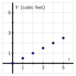Figure1.1.4.Una representación visual de los datos en laTabla 1.1.3.
También podemos representar estos datos en un gráfico trazando pares ordenados \((t,V)\) en un sistema de ejes de coordenadas, donde \(t\) representa la distancia horizontal del punto desde el origen, \((0,0)\text{,}\) y \(V\) representa la distancia vertical desde \((0,0)\text{.}\) La representación visual de la tabla de valores de Tabla 1.1.3 se muestra en el gráfico en Figura 1.1.4.
A veces es posible usar variables y una o más ecuaciones para conectar cantidades que están cambiando conjuntamente. En el ejemplo del acuario de la actividad previa, podemos observar que el volumen, \(V\text{,}\) de una caja rectangular que tiene una longitud \(l\text{,}\) un ancho \(w\) y una altura \(h\) se da por
\begin{equation*}
V = l \cdot w \cdot h\text{,}
\end{equation*}
y así, dado que el agua en el tanque siempre tendrá una longitud \(l = 4\) pies y un ancho \(w = 2\) pies, el volumen de agua en el tanque está directamente relacionado con la profundidad del agua en el tanque por la ecuación
\begin{equation*}
V = 4 \cdot 2 \cdot h = 8h\text{.}
\end{equation*}
Dependiendo de qué variable resolvamos, podemos ver cómo \(V\) depende de \(h\) a través de la ecuación \(V = 8h\text{,}\) o cómo \(h\) depende de \(V\) mediante la ecuación \(h = \frac{1}{8}V\text{.}\) Desde cualquiera de las dos perspectivas, observamos que a medida que la profundidad o el volumen aumentan, el volumen o la profundidad deben aumentar correspondientemente.
Activity1.1.2.
Considera un tanque en forma de cono circular invertido (con la punta hacia abajo) donde el radio del tanque es de \(2\) pies y su profundidad es de \(4\) pies. Supón que el tanque se está llenando con agua que entra a una tasa constante de \(0.75\) pies cúbicos por minuto.
Dibuja un esquema etiquetado del tanque, incluyendo una imagen del tanque con agua antes de que esté completamente lleno.
¿Cuáles son algunas de las cantidades que están cambiando en este escenario? ¿Cuáles son algunas de las cantidades que no están cambiando?
Llena la siguiente tabla de valores para determinar cuánta agua, \(V\text{,}\) hay en el tanque en un tiempo dado en minutos, \(t\text{,}\) y así generar un gráfico de la relación entre volumen y tiempo trazando los datos en los ejes proporcionados.
\(t\)
\(V\)
\(0\)
\(\)
\(1\)
\(\)
\(2\)
\(\)
\(3\)
\(\)
\(4\)
\(\)
\(5\)
\(\)
Table1.1.5.Tabla para registrar datos sobre volumen y tiempo en el tanque cónico.
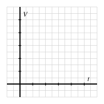Figure1.1.6.Cómo cambian conjuntamente el volumen y el tiempo en el tanque cónico.
Finalmente, piensa en cómo la altura, \(h\text{,}\) del agua cambia conjuntamente con el tiempo. Sin intentar determinar valores específicos de \(h\) en valores particulares de \(t\text{,}\) ¿cómo esperarías que aparecieran los datos de la relación entre \(h\) y \(t\text{?}\) Usa los ejes proporcionados para esbozar al menos dos posibilidades; escribe al menos una oración para explicar cómo crees que debería aparecer el gráfico.
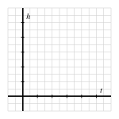
Subsection1.1.2Usando el Álgebra para Agregar Perspectiva
Una de las formas en que entendemos las ideas matemáticas es viéndolas desde múltiples perspectivas. Podemos usar diferentes medios para establecer diferentes puntos de vista: palabras, datos numéricos, gráficos o símbolos. Además, a veces al cambiar nuestra perspectiva dentro de un enfoque particular, obtenemos una comprensión más profunda.
Si consideramos el tanque cónico discutido en Activity 1.1.2, como se ve en Figure 1.1.7 y Figure 1.1.8, podemos usar el álgebra para comprender mejor algunas de las relaciones entre las cantidades que cambian. El volumen de un cono con radio \(r\) y altura \(h\) se da por la fórmula
\begin{equation*}
V = \frac{1}{3}\pi r^2 h\text{.}
\end{equation*}
Nota que en cualquier momento mientras se llena el tanque, \(r\) (el radio de la superficie del agua), \(h\) (la profundidad del agua) y \(V\) (el volumen del agua) están cambiando; además, todos están conectados entre sí. Debido a las restricciones del propio tanque (con un radio de \(2\) pies y una profundidad de \(4\) pies), se sigue que a medida que el radio y la altura del agua cambian, siempre lo hacen en la proporción
Resolviendo esta última ecuación para \(r\text{,}\) vemos que \(r = \frac{1}{2}h\text{;}\) sustituyendo este resultado más reciente en la ecuación del volumen, se sigue que
\begin{equation*}
V = \frac{1}{3}\pi \left( \frac{1}{2}h \right)^2 h = \frac{\pi}{12} h^3\text{.}
\end{equation*}
Esta ecuación más reciente nos ayuda a entender cómo \(V\) y \(h\) cambian conjuntamente. Sabemos por nuestro trabajo anterior que el volumen de agua en el tanque aumenta a una tasa constante de \(0.75\) pies cúbicos por minuto. Esto conduce a los datos mostrados en Table 1.1.9.
Table1.1.9.Cómo cambian conjuntamente el tiempo y el volumen en un tanque cónico.
\(t\)
\(0\)
\(1\)
\(2\)
\(3\)
\(4\)
\(5\)
\(V\)
\(0.0\)
\(0.75\)
\(1.5\)
\(2.25\)
\(3.0\)
\(3.75\)
Con la ecuación \(V = \frac{\pi}{12} h^3\text{,}\) ahora también podemos ver cómo la altura del agua cambia conjuntamente con el tiempo. Resolviendo la ecuación para \(h\text{,}\) notamos que \(h^3 = \frac{12}{\pi} V\text{,}\) y por lo tanto
\begin{equation}
h = \sqrt[3]{\frac{12}{\pi} V}\text{.}\tag{1.1.1}
\end{equation}
Así, cuando \(V = 0.75\text{,}\) se sigue que \(h = \sqrt[3]{\frac{12}{\pi} 0.75} \approx 1.42\text{.}\) Ejecutando cálculos similares con los otros valores de \(V\) en Table 1.1.9, obtenemos los siguientes datos actualizados que ahora incluyen \(h\text{.}\)
Table1.1.10.Cómo cambian conjuntamente el tiempo, el volumen y la altura en un tanque cónico.
\(t\)
\(0\)
\(1\)
\(2\)
\(3\)
\(4\)
\(5\)
\(V\)
\(0.0\)
\(0.75\)
\(1.5\)
\(2.25\)
\(3.0\)
\(3.75\)
\(h\)
\(0.0\)
\(1.42\)
\(1.79\)
\(2.05\)
\(2.25\)
\(2.43\)
Al graficar estos datos en dos conjuntos de ejes diferentes, vemos las distintas formas en que \(V\) y \(h\) cambian con \(t\text{.}\) Mientras que el volumen aumenta a una tasa constante, como se puede ver en la apariencia de línea recta de los puntos en Figure 1.1.11, observamos que la altura del agua aumenta de manera que se eleva más lentamente a medida que pasa el tiempo, como se muestra en la forma en que la curva en la que se encuentran los puntos en Figure 1.1.12 “se inclina hacia abajo” a medida que pasa el tiempo.
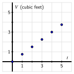Figure1.1.11.Graficando \(V\) versus \(t\text{.}\)
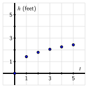Figure1.1.12.Graficando \(h\) versus \(t\text{.}\)
Estos comportamientos diferentes tienen sentido debido a la forma del tanque. Dado que al principio hay menos volumen en relación con la profundidad cerca de la punta del cono, a medida que el agua fluye a una tasa constante, la altura del agua aumentará rápidamente. Pero a medida que pasa el tiempo y se añade más agua a la misma tasa, hay más espacio para que el agua llene para que el nivel del agua suba, y por lo tanto, la altura del agua sube cada vez más lentamente a medida que pasa el tiempo.
Activity1.1.3.
Considera un tanque en forma de esfera donde el radio del tanque es de \(3\) pies. Supón que el tanque está inicialmente completamente lleno y que se está vaciando mediante una bomba a una tasa constante de \(1.2\) pies cúbicos por minuto.
Dibuja un esquema etiquetado del tanque, incluyendo una imagen del tanque con algo de agua antes de que esté completamente vacío.
¿Cuáles son algunas de las cantidades que están cambiando en este escenario? ¿Cuáles son algunas de las cantidades que no están cambiando?
Recuerda que el volumen de una esfera de radio \(r\) es \(V = \frac{4}{3} \pi r^3\text{.}\) Cuando el tanque está completamente lleno en el momento \(t = 0\text{,}\) justo antes de empezar a vaciarse, ¿cuánta agua hay presente?
¿Cuánto tiempo tomará para que el tanque se vacíe completamente?
Complete la siguiente tabla de valores para determinar cuánta agua, \(V\text{,}\) hay en el tanque en un momento dado en minutos, \(t\text{,}\) y así generar un gráfico de la relación entre el volumen y el tiempo. Escribe una oración para explicar por qué el gráfico de los datos aparece de la manera en que lo hace.
\(t\)
\(V\)
\(0\)
\(20\)
\(40\)
\(60\)
\(80\)
\(94.24\)
Table1.1.13.Datos sobre cómo cambian juntos el volumen y el tiempo.
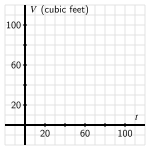Figure1.1.14.Un gráfico de cómo cambian el volumen y el tiempo en conjunto en un tanque esférico que se está drenando.
Finalmente, piensa en cómo cambia la altura del agua junto con el tiempo. ¿Cuál es la altura del agua cuando \(t = 0\text{?}\) ¿Cuál es la altura cuando el tanque está vacío? ¿Cómo esperarías que aparezcan los datos de la relación entre \(h\) y \(t\text{?}\) Utiliza los ejes proporcionados para esbozar al menos dos posibilidades; escribe al menos una oración para explicar cómo crees que debería aparecer el gráfico.
Subsection1.1.3Resumen
Cuando dos cantidades relacionadas están cambiando conjuntamente, podemos entender mejor cómo el cambio en una afecta a la otra utilizando datos, gráficos, palabras o símbolos algebraicos para expresar la relación entre ellas. Ver, por ejemplo, Tabla 1.1.9, Figura 1.1.11, 1.1.12, y Ecuación (1.1.1) que juntas ayudan a explicar cómo la altura y el volumen de agua en un tanque cónico cambian conjuntamente a medida que cambia el tiempo.
Cuando la cantidad de agua en un tanque está cambiando, podemos observar otras cantidades que cambian, dependiendo de la forma del tanque. Por ejemplo, si el tanque es cónico, podemos considerar tanto la altura cambiante del agua como el radio cambiante de la superficie del agua. Además, siempre que pensamos en una cantidad que está cambiando con el paso del tiempo, notamos que el tiempo mismo está cambiando.
Exercises1.1.4Exercises
1.
The graph below shows the fuel consumption (in miles per gallon, mpg) of a car driving at various speeds (in miles per hour, mph).
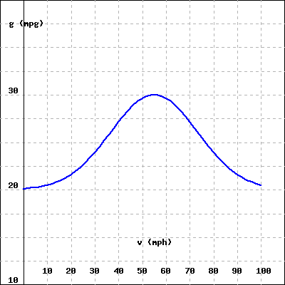
(click on image to enlarge)
(a) How much gas is used on a 400 mile trip at 80 mph?
amount of gas = gallons
(b) How much gas is saved by traveling 60 mph instead of 70 mph on a 600 mile trip?
saved gas = gallons
(c) According to this graph, what is the most fuel efficient speed to travel?
most fuel efficient speed = mph
2.
Suppose we have an unusual tank whose base is a perfect sphere with radius \(3\) feet, and then atop the spherical base is a cylindrical “chimney” that is a circular cylinder of radius \(1\) foot and height \(2\) feet, as shown in Figure 1.1.15. The tank is initially empty, but then a spigot is turned on that pumps water into the tank at a constant rate of \(1.25\) cubic feet per minute.
Figure1.1.15.A spherical tank with a cylindrical chimney.
Let \(V\) denote the total volume of water (in cubic feet) in the tank at any time \(t\) (in minutes), and \(h\) the depth of the water (in feet) at time \(t\text{.}\)
It is possible to use calculus to show that the total volume this tank can hold is \(V_{\text{full}} = \pi(20 + \frac{38}{3}\sqrt{2}) \approx 119.11\) cubic feet. In addition, the actual height of the tank (from the bottom of the spherical base to the top of the chimney) is \(h_{\text{full}} = \sqrt{8} + 5 \approx 7.83\) feet. How long does it take the tank to fill? Why?
On the blank axes provided below, sketch (by hand) possible graphs of how \(V\) and \(t\) change in tandem and how \(h\) and \(t\) change in tandem.
For each graph, label any ordered pairs on the graph that you know for certain, and write at least one sentence that explains why your graphs have the shape they do.
How would your graph(s) change (if at all) if the chimney was shaped like an inverted cone instead of a cylinder? Explain and discuss.
3.
Suppose we have a tank that is a perfect sphere with radius \(6\) feet. The tank is initially empty, but then a spigot is turned on that is pumping water into the tank in a very special way: the faucet is regulated so that the depth of water in the tank is increasing at a constant rate of \(0.4\) feet per minute.
Let \(V\) denote the total volume of water (in cubic feet) in the tank at any time \(t\) (in minutes), and \(h\) the depth of the water (in feet) at given time \(t\text{.}\)
How long does it take the tank to fill? What will the values of \(V\) and \(h\) be at the moment the tank is full? Why?
On the blank axes provided below, sketch (by hand) possible graphs of how \(V\) and \(t\) change in tandem and how \(h\) and \(t\) change in tandem.
For each graph, label any ordered pairs on the graph that you know for certain, and write at least one sentence that explains why your graphs have the shape they do.
How do your responses change if the tank stays the same but instead the tank is initially full and the tank drains in such a way that the height of the water is always decreasing at a constant rate of \(0.25\) feet per minute?
4.
The relationship between the position, \(s\text{,}\) of a car driving on a straight road at time \(t\) is given by the graph pictured at left in Figure 1.1.16. The car’s position 1
You can think of the car’s position like mile-markers on a highway. Saying that \(s = 500\) means that the car is located \(500\) feet from “marker zero” on the road.
has units measured in thousands of feet while time is measured in minutes. For instance, the point \((4,6)\) on the graph indicates that after \(4\) minutes, the car has traveled \(6000\) feet from its starting location.
Write several sentences that explain the how the car is being driven and how you make these conclusions from the graph.
How far did the car travel between \(t = 2\) and \(t = 10\text{?}\)
Does the car ever travel in reverse? Why or why not? If not, how would the graph have to look to indicate such motion?
On the blank axes in Figure 1.1.16, plot points or sketch a curve to describe the behavior of a car that is driven in the following way: from \(t = 0\) to \(t = 5\) the car travels straight down the road at a constant rate of \(1000\) feet per minute. At \(t = 5\text{,}\) the car pulls over and parks for \(2\) full minutes. Then, at \(t = 7\text{,}\) the car does an abrupt U-turn and returns in the opposite direction at a constant rate of \(800\) feet per minute for \(5\) additional minutes. As part of your work, determine (and label) the car’s location at several additional points in time other than \(t = 0, 5, 7, 12\text{.}\)
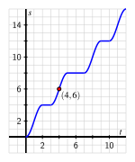
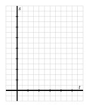
Figure1.1.16.A graph of the relationship between a car’s position \(s\) and time \(t\)